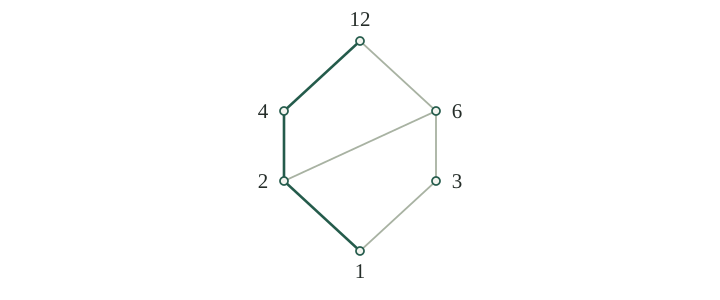

Inclusion compares sets, but it does not compare every pair: neither \(\{0\}\subseteq\{1\}\) nor \(\{1\}\subseteq\{0\}\). An order can record comparisons without requiring all elements to lie in a single sequence.
A partial order on a set \(P\) is a binary relation, written \(\leq\), with the following properties for all \(a,b,c\in P\):
| Property | Condition |
|---|---|
| Reflexivity | \(a\leq a\). |
| Antisymmetry | \(a\leq b\) and \(b\leq a\) imply \(a=b\). |
| Transitivity | \(a\leq b\) and \(b\leq c\) imply \(a\leq c\). |
The pair \((P,\leq)\) is a partially ordered set, or poset. The symbol \(\leq\) denotes the chosen relation; it need not be numerical comparison. We write \(b\geq a\) for \(a\leq b\).
Elements \(a,b\) are comparable if \(a\leq b\) or \(b\leq a\). Otherwise they are incomparable. A partial order in which every pair is comparable is a total order, also called a linear order. The usual orders on \(\mathbb N,\mathbb Z,\mathbb Q,\mathbb R\) are total.
Antisymmetry is different from the symmetry required of an equivalence relation: comparisons in both directions force equality. It does not mean that symmetry fails. Equality itself is both symmetric and a partial order. In this order, distinct elements are incomparable; it is total exactly when \(P\) has at most one element.
For a fixed set \(U\), inclusion is a partial order on the power set \(\mathcal P(U)\). Every set includes itself; transitivity and antisymmetry are the inclusion rules from Equality from two inclusions. If \(U\) contains distinct \(p,q\), its singleton subsets \(\{p\},\{q\}\) are incomparable.
On the positive integers \(\mathbb N_{>0}=\{1,2,3,\ldots\}\), define divisibility by
This is a partial order. Reflexivity uses \(a=a\cdot1\); if \(b=ak\) and \(c=b\ell\), then \(c=a(k\ell)\), giving transitivity. If also \(a=b\ell\), cancellation in \(a=ak\ell\) gives \(k\ell=1\). Positive integers with product \(1\) are both \(1\), so \(a=b\). The order is not total: neither \(2\mid3\) nor \(3\mid2\).
A subset \(S\subseteq P\) carries the inherited order: compare its elements by the same rule as in \(P\). Each partial-order axiom remains true because it already holds for all elements of \(P\). For example, we can restrict divisibility to
the positive divisors of \(12\). In this order \(3\) is below \(6\), but \(3\) and \(4\) are incomparable, despite their usual numerical comparison.
Reversing a partial order also gives a partial order: define \(a\leq_{\mathrm{op}}b\) to mean \(b\leq a\). Reflexivity and antisymmetry are unchanged, and transitivity follows by reading the two comparisons in reverse. This opposite order lets us turn statements about elements above a set into statements about elements below it.
A strict partial order is an irreflexive, transitive relation: \(a<a\) never holds, and \(a<b<c\) implies \(a<c\). A partial order determines a strict partial order by
Conversely, a strict partial order determines a partial order by
These constructions undo each other.
Proof
Start with a partial order. The strict relation is irreflexive by definition. If \(a<b\) and \(b<c\), then \(a\leq c\). Were \(a=c\), we would have both \(a\leq b\) and \(b\leq a\), forcing \(a=b\), a contradiction. Thus \(a<c\).
Now start with a strict partial order. Adding equality gives reflexivity. If \(a\leq b\) and \(b\leq a\) with \(a\ne b\), then \(a<b<a\), contradicting irreflexivity. For transitivity, suppose \(a\leq b\leq c\). If either comparison is equality, substitute it; otherwise use transitivity of \(<\).
Removing equality and putting it back restores the original partial order. Putting equality into a strict order and then removing it restores the strict relation, since irreflexivity already excludes equal endpoints. □
For a total order, exactly one of \(a<b\), \(a=b\), or \(b<a\) holds. In a partial order there is a fourth possibility: incomparability. Thus \(a\nleq b\) does not generally imply \(b<a\). The strict order associated with inclusion is proper inclusion \(\subsetneq\).
A chain in a poset is a subset whose elements are pairwise comparable. An antichain is a subset whose distinct elements are pairwise incomparable. In \(D\) with divisibility, \(\{1,2,4,12\}\) is a chain and \(\{4,6\}\) is an antichain.
An element \(b\) covers \(a\) if \(a<b\) and there is no \(c\in P\) with \(a<c<b\). A Hasse diagram for a finite poset draws each element as a point and joins \(a\) to \(b\) when \(b\) covers \(a\), placing \(b\) higher. Loops and comparisons already implied by transitivity are omitted.

In a finite poset, \(a<b\) exactly when there is a path from \(a\) to \(b\) going upward along edges. One direction follows from transitivity. For the other, start with \(a<b\) and insert an intermediate element whenever two successive elements do not form a cover. Each insertion adds a new element to a strictly increasing chain, so finiteness forces the process to stop.
Height alone does not give a comparison: in , \(3\) lies lower than \(4\), but no upward path connects them. Nor do covers determine every infinite order. In \(\mathbb Q\) with its usual order, \((a+b)/2\) lies strictly between any \(a<b\), so there are no covers.
Let \(S\) be a subset of a poset \(P\). The following conditions all require the element under discussion to belong to \(S\):
| Term | Condition for \(m\in S\) |
|---|---|
| Least element | \(m\leq s\) for every \(s\in S\). |
| Minimal element | No \(s\in S\) satisfies \(s<m\). |
| Greatest element | \(s\leq m\) for every \(s\in S\). |
| Maximal element | No \(s\in S\) satisfies \(m<s\). |
A least element is also called a minimum, written \(\min S\); a greatest element is a maximum, written \(\max S\). If \(m,m'\) are both least, then \(m\leq m'\) and \(m'\leq m\), so antisymmetry gives \(m=m'\). The same argument proves uniqueness of a greatest element.
A least element \(m\) is the only minimal element: any other \(s\in S\) has \(m<s\). A minimal element, however, need not be comparable with every member of \(S\). Under divisibility, both elements of \(\{4,6\}\) are minimal and maximal; the set has neither a least nor a greatest element.
In a total order, a minimal element is least. For any \(s\in S\), comparability gives \(m\leq s\) or \(s\leq m\); minimality forces equality in the second case. Reversing the order shows that maximal elements are greatest there.
A least element of the whole poset is called its bottom, denoted \(\bot\), and a greatest element its top, denoted \(\top\), when they exist. For \((\mathcal P(U),\subseteq)\), they are \(\varnothing\) and \(U\). For \(D\) under divisibility, they are \(1\) and \(12\).
If \(S\) is a nonempty finite subset of a poset, then for every \(s\in S\) there is a minimal element \(m\) of \(S\) with \(m\leq s\), and a maximal element \(M\) of \(S\) with \(s\leq M\).
Consequently, if \(S\) has just one minimal element, it is least. If it has just one maximal element, it is greatest.
Proof
Starting at \(s\), stop if it is minimal. Otherwise choose a strictly smaller element of \(S\), and repeat. A strictly descending chain cannot revisit an element: transitivity would produce \(x<x\). Since \(S\) is finite, the process stops at a minimal element \(m\); transitivity gives \(m\leq s\). Apply the same argument in the opposite order for a maximal element above \(s\).
If \(m\) is the only minimal element, the minimal element found below each \(s\) must be \(m\). Hence \(m\leq s\) for every \(s\in S\), making it least. Reverse the order for the maximal case. □
Let \(P=\mathbb Z\cup\{\star\}\), where \(\star\) is a new element. Keep the usual order on \(\mathbb Z\), add \(\star\leq\star\), and make \(\star\) incomparable with every integer. Is this a partial order? Find its minimal and least elements.
It is a partial order. Reflexivity holds in each part; comparisons involving \(\star\) have equal endpoints, so antisymmetry and transitivity reduce either to \(\star\leq\star\) or to the usual order on integers.
The element \(\star\) is minimal. No integer \(n\) is minimal because \(n-1<n\). Thus \(\star\) is the unique minimal element, but it is not least: for example, \(\star\nleq0\). There is no least element, since a least element would have to be minimal. The finiteness assumption in matters.
For \(S\subseteq P\), an upper bound of \(S\) in \(P\) is an element \(u\in P\) such that \(s\leq u\) for every \(s\in S\). A lower bound is an element \(\ell\in P\) such that \(\ell\leq s\) for every \(s\in S\). A set is bounded above or bounded below if the corresponding bound exists; it is bounded if both exist.
A bound need not belong to \(S\). In \(D\) under divisibility, \(12\) is an upper bound of \(\{4,6\}\), and \(1,2\) are lower bounds; none belongs to \(\{4,6\}\). An upper bound that does belong to \(S\) is exactly a greatest element of \(S\). The analogous statement holds for lower bounds and least elements.
The ambient poset matters. The set \(\{4,6\}\) has an upper bound in \(D\), but has none in \(D\setminus\{12\}\) with inherited divisibility: none of the remaining elements is divisible by both \(4\) and \(6\).
The supremum, or least upper bound, of \(S\subseteq P\) is an element \(u\in P\) satisfying both:
We write \(u=\sup_P S\), omitting the subscript when the ambient poset is clear. Reversing the comparisons defines the infimum, or greatest lower bound, \(\inf_P S\). Suprema and infima are unique when they exist: two least upper bounds are each below the other, and antisymmetry makes them equal; reverse the argument for greatest lower bounds.
If \(S\) has a greatest element \(m\), then \(\sup S=m\): it bounds \(S\), and every upper bound is above \(m\) because \(m\in S\). Conversely, if \(\sup S\in S\), it is greatest. The corresponding equivalence holds between an infimum belonging to \(S\) and a least element.
For \(S=(0,1)\subseteq\mathbb R\), we have \(\sup S=1\) and \(\inf S=0\), but neither endpoint belongs to \(S\). To check the first assertion, \(1\) is an upper bound; if \(v<1\), then \((\max\{v,0\}+1)/2\) lies in \(S\) and exceeds \(v\), so \(v\) is not an upper bound. Similarly, \(0\) is a lower bound; for any \(v>0\), the point \(\min\{v,1\}/2\) lies in \(S\) and is below \(v\).
In divisibility on \(D\),
Indeed, the common upper bounds form \(\{12\}\), while the common lower bounds form \(\{1,2\}\), whose greatest element for divisibility is \(2\). More generally, for positive integers ordered by divisibility, a supremum is a least common multiple and an infimum is a greatest common divisor, with “least” and “greatest” taken in this order.
Let \(P=\{a,b,u,v\}\), with all four elements distinct. Besides reflexive comparisons, the only comparisons are
Check that this defines a partial order. Does \(\{a,b\}\) have a supremum? Does \(\{u,v\}\) have an infimum?
Reflexivity is included, and there are no strict comparisons in both directions. No two strict comparisons can be composed, so transitivity only adds comparisons already present. Thus this is a partial order.
The upper bounds of \(\{a,b\}\) are exactly \(u,v\). They are incomparable, so neither is least among the upper bounds. Both are minimal upper bounds, but there is no supremum. Dually, \(a,b\) are the lower bounds of \(\{u,v\}\), and neither is greatest, so there is no infimum.
Even in a finite poset, having bounds does not guarantee a least upper bound or a greatest lower bound.
Let \(U\) be a set and \(\mathcal F\subseteq\mathcal P(U)\) a family of subsets. In \((\mathcal P(U),\subseteq)\), both bounds exist and are
The second set is the intersection of the family relative to \(U\). For the empty family these formulas give \(\sup\varnothing=\varnothing\) and \(\inf\varnothing=U\).
Proof
Every \(A\in\mathcal F\) is contained in the union, so the union is an upper bound. If \(B\subseteq U\) is any upper bound, then \(A\subseteq B\) for all \(A\in\mathcal F\). A member of the union belongs to some such \(A\), hence to \(B\). Thus the union is contained in every upper bound.
Write \(I=\{x\in U:\text{for every }A\in\mathcal F,\ x\in A\}\). By definition \(I\subseteq A\) for each \(A\in\mathcal F\), so \(I\) is a lower bound. If \(B\subseteq U\) is another lower bound, each \(x\in B\) belongs to every \(A\in\mathcal F\), hence to \(I\). Therefore \(B\subseteq I\).
When \(\mathcal F=\varnothing\), no element can belong to one of its members, so the union is empty. Every \(x\in U\) satisfies the condition defining \(I\), because there are no members to check. Hence \(I=U\). □
For two subsets this gives \(\sup\{A,B\}=A\cup B\) and \(\inf\{A,B\}=A\cap B\). A poset in which every pair has a supremum and an infimum is called a lattice. If every subset, including the empty subset, has both, it is a complete lattice. Thus \(\mathcal P(U)\) is a complete lattice.
Which orders exist on the empty set? For an arbitrary poset \(P\), what are the bounds of its empty subset, and when do \(\sup_P\varnothing\) and \(\inf_P\varnothing\) exist?
The only relation on \(\varnothing\) is empty. All the partial-order and total-order conditions hold because there are no elements violating them. The same relation is a strict partial order. There are no least, greatest, minimal, or maximal elements, since each would have to belong to the empty set.
Every \(p\in P\) is both an upper and a lower bound of \(\varnothing\). Therefore \(\sup_P\varnothing\) exists exactly when \(P\) has a bottom element, and equals that element. Similarly, \(\inf_P\varnothing\) exists exactly when \(P\) has a top element, and equals it.
For \(P=\varnothing\), neither bound exists: the set of candidates is empty. For a singleton poset \(P=\{p\}\), both are \(p\). Distinguish an empty poset from \(\mathcal P(\varnothing)=\{\varnothing\}\), which has one element and is a complete lattice.
Let \((P,\leq_P)\) and \((Q,\leq_Q)\) be posets. A map \(f:P\to Q\) is monotone, or order-preserving, if
It is an order embedding if it also reflects comparisons:
An order isomorphism is a bijective order embedding. Equivalently, it is a bijection for which both \(f\) and \(f^{-1}\) are monotone: the reverse implication in the displayed equivalence is precisely monotonicity of \(f^{-1}\) applied to \(f(a),f(b)\).
Every order embedding is injective. If \(f(a)=f(b)\), reflection gives both \(a\leq_P b\) and \(b\leq_P a\), so \(a=b\). A monotone map need not be injective; for example, every constant map is monotone.
The inclusion of a subset with inherited order is an order embedding. The map \(n\mapsto n+1\) is an order isomorphism from \(\mathbb Z\) to itself with its usual order, with inverse \(n\mapsto n-1\). The identity map is monotone, and composites of monotone maps are monotone: apply the two implications successively. Applying two equivalences instead shows that composites of order embeddings are order embeddings; with bijectivity, the same holds for order isomorphisms.
Take \(P=\{0,1\}\) ordered by equality and \(Q=\{0,1\}\) with the usual order. For \(f:P\to Q\) defined by \(f(0)=0\) and \(f(1)=1\), decide whether it is monotone, injective, surjective, and an order embedding. What changes if the domain of an injective monotone map is totally ordered?
The map is bijective. It is monotone because its domain compares an element only with itself. But \(f(0)\leq_Q f(1)\) while \(0\nleq_P1\), so it is not an order embedding. Its inverse is not monotone. Thus injectivity, even together with surjectivity and monotonicity, does not suffice for partial orders.
If \(P\) is totally ordered and \(f:P\to Q\) is injective and monotone, it does reflect order. Suppose \(f(a)\leq_Q f(b)\). If \(a\nleq_P b\), totality gives \(b<_P a\). Monotonicity yields \(f(b)\leq_Q f(a)\), so antisymmetry and injectivity give \(a=b\), a contradiction. Hence \(a\leq_P b\). In particular, a monotone bijection from a total order to a poset is an order isomorphism.
If \(f:P\to Q\) is an order isomorphism and \(S\subseteq P\) has supremum \(u\), then \(f(S)\) has supremum \(f(u)\) in \(Q\). If \(S\) has infimum \(\ell\), then \(\inf_Q f(S)=f(\ell)\).
Proof
For each \(s\in S\), \(s\leq_P u\), so \(f(s)\leq_Q f(u)\). Thus \(f(u)\) is an upper bound of the image \(f(S)\). If \(v\in Q\) is any upper bound of that image, monotonicity of \(f^{-1}\) gives \(s\leq_P f^{-1}(v)\) for all \(s\in S\). Hence \(u\leq_P f^{-1}(v)\), and applying \(f\) yields \(f(u)\leq_Q v\). This proves the least-upper-bound property. Apply the argument to the opposite orders for the infimum. □
Monotonicity alone only ensures that \(f(u)\) bounds the image. For example, define \(f:\mathcal P(\{0,1\})\to\{0,1\}\), with inclusion in the domain and the usual order in the codomain, by \(f(A)=1\) if \(A=\{0,1\}\), and \(f(A)=0\) otherwise. This map is monotone: an input with value \(1\) has no larger distinct input, and \(0\) is below either output. Yet for \(S=\{\{0\},\{1\}\}\),
A preorder on a set \(A\) is a reflexive, transitive relation \(\preccurlyeq\). It need not be antisymmetric. Every partial order is a preorder, but different elements of a preordered set can satisfy both \(a\preccurlyeq b\) and \(b\preccurlyeq a\).
For example, compare pairs in \(\mathbb R^2\) using only their first coordinate:
Reflexivity and transitivity follow from the real order. Antisymmetry fails because \((0,0)\preccurlyeq(0,1)\) and \((0,1)\preccurlyeq(0,0)\), although the pairs differ.
More generally, any map \(h:A\to P\) into a poset defines a preorder by \(a\preccurlyeq b\) if \(h(a)\leq h(b)\). Again the two axioms follow from those of \(P\). This preorder is a partial order exactly when \(h\) is injective: comparisons in both directions force \(h(a)=h(b)\); conversely, equal images give comparisons in both directions, which antisymmetry would force to have equal inputs.
The definition of a monotone map applies to preorders too, with the same implication as in .
Let \((A,\preccurlyeq)\) be a preordered set. Define
Then \(\sim\) is an equivalence relation. The rule
is independent of representatives and defines a partial order on \(A/{\sim}\). The projection \(q:A\to A/{\sim}\), \(q(a)=[a]\), is monotone and surjective.
Proof
Reflexivity of \(\preccurlyeq\) gives \(a\sim a\), and the definition is symmetric. If \(a\sim b\) and \(b\sim c\), transitivity gives \(a\preccurlyeq c\) and \(c\preccurlyeq a\), so \(a\sim c\). We may therefore form the quotient set.
To check representatives, suppose \(a'\sim a\) and \(b'\sim b\). If \(a\preccurlyeq b\), then
so \(a'\preccurlyeq b'\). Conversely, \(a'\preccurlyeq b'\) gives \(a\preccurlyeq a'\preccurlyeq b'\preccurlyeq b\), hence \(a\preccurlyeq b\). Thus the truth of \eqref{eq:quotient-order} does not change when either representative changes.
Reflexivity and transitivity on classes now follow from the same properties on \(A\). For antisymmetry, if \([a]\leq[b]\) and \([b]\leq[a]\), then \(a\sim b\), so their classes are equal. Finally, the defining rule gives monotonicity of \(q\), and every class has a representative, giving surjectivity. □
For the preorder on \(\mathbb R^2\) above, \((x,s)\sim(y,t)\) exactly when \(x=y\). The classes are the vertical fibers \(\{x\}\times\mathbb R\). The map
is well defined and injective because equal classes are exactly those with equal first coordinate. It is surjective because \(\Phi([(x,0)])=x\), and \([(x,s)]\leq[(y,t)]\) exactly when \(x\leq y\). Hence \(\Phi\) is an order isomorphism: the quotient recovers the usual ordered real line.
Let \(q:A\to A/{\sim}\) be the ordered quotient of a preorder from , and let \(P\) be a poset. Every monotone map \(f:A\to P\) has a unique monotone map
such that \(f=\overline f\circ q\). It is given by \(\overline f([a])=f(a)\). Conversely, composing any monotone map \(A/{\sim}\to P\) with \(q\) gives a monotone map \(A\to P\).
Proof
If \(a\sim b\), monotonicity gives \(f(a)\leq f(b)\) and \(f(b)\leq f(a)\). Antisymmetry in \(P\) forces \(f(a)=f(b)\). Thus \(f\) is constant on each class. The factorization theorem gives a unique map \(\overline f\) with \(f=\overline f\circ q\).
If \([a]\leq[b]\), then \(a\preccurlyeq b\), so \(\overline f([a])=f(a)\leq f(b)=\overline f([b])\). This proves monotonicity. The converse follows by composing two monotone maps, since \(q\) is monotone. □
The hypothesis that \(P\) is a partial order is needed. The identity map of the preordered plane is monotone, but it cannot factor through its quotient as a map back to the plane: \((0,0)\) and \((0,1)\) have the same class and distinct images.
If a preorder is already a partial order, what does its ordered quotient change? Could we instead use any equivalence relation on a poset and define \([a]\leq[b]\) by \(a\leq b\)? Test this rule for parity on the usual ordered integers.
In a partial order, mutual comparison is equivalent to equality, so every quotient class is a singleton. The projection is therefore bijective and preserves and reflects order by \eqref{eq:quotient-order}. It is an order isomorphism.
An arbitrary equivalence relation need not work. For parity, \([0]=[2]\), but \(0\leq1\) holds and \(2\leq1\) does not. The proposed comparison between the even and odd classes changes with the representative. It is not well defined.
Replacing the rule by “some representatives are comparable in this direction” does not produce a partial order here either. An even integer can be below an odd one, as \(0\leq1\), and an odd one can be below an even one, as \(1\leq2\). The two distinct parity classes would be comparable in both directions, violating antisymmetry. The equivalence relation used in is tied to the preorder itself.